A tymczasem w Cameracie...
.
2013-01-13
Przed koncertem musimy się rozśpiewać, więc krótka próba.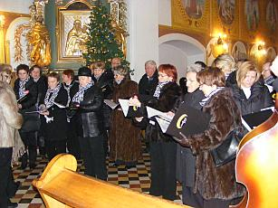 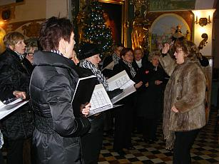
A teraz niespodzianka . . . pierwszy raz na kontrabasie przygrywa nam Marek Turchan nasz cameracki bas.
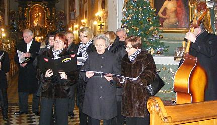
Jeszcze krótka, wspólna próba z chórem „TUTTE LE CORDE”
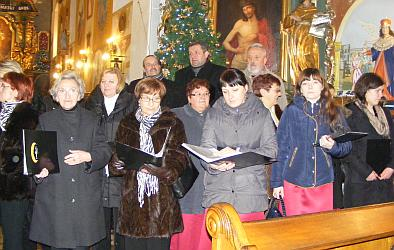
Teraz siedząc w bocznej nawie czekamy na swój występ.
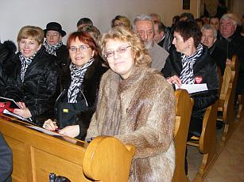 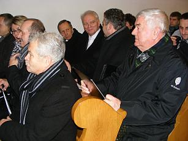
Brrrr . . . zimno. Gdów jak zwykle ciepłem nas nie rozpieszcza :)
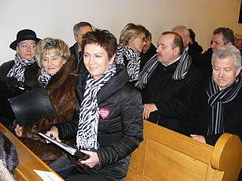 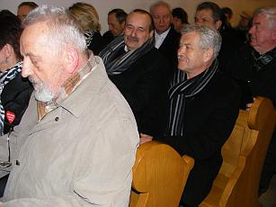
I zaczął się koncert. Całość prowadzi Adam Czyżowski.
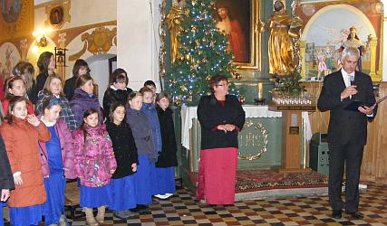
Występują różne chóry
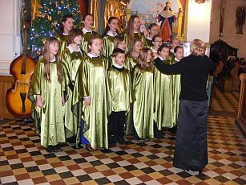 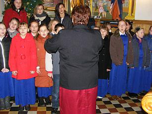 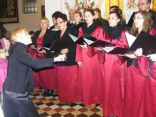
No i czas na Cameratę, więc wychodzimy ładnie, jak zwykle rzędami, pod czujnym okiem pani dyrygentki :)
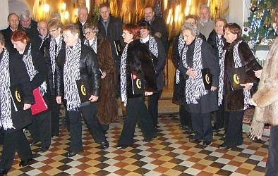
Śpiewamy pięknie, jak zawsze.
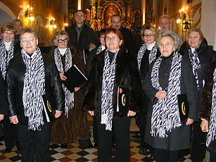 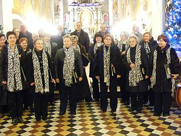
Teraz wykonanie połączonych chórów CAMERATY i TUTTE LE CORDE.
Dyryguje p. Izabela Szota.
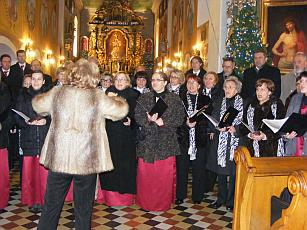 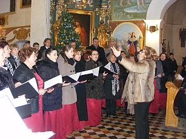
Koncert dobiega końca. Jeszcze wspólne wykonanie kolędy „ACH MEIN HERZLIBES JESULEIN” J.S. Bacha. Krótko o kompozytorze opowiedziała p. Izabela Szota.
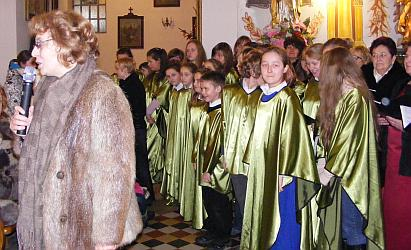
Jeszcze wspólne zdjęcie dyrygentek i na koniec . . .
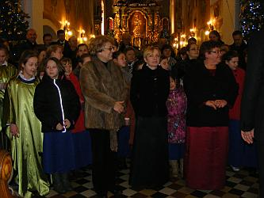
rozdanie dyplomów uczestnikom.
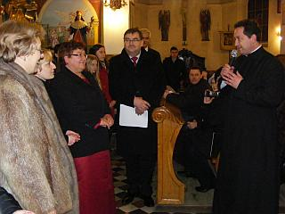 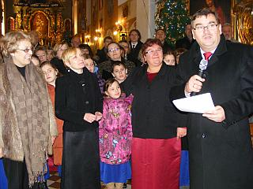

© Stowarzyszenie Muzyczne Chór Camerata Wieliczka
Projekt i wykonanie:  Prowadzenie strony: Małgorzata Wysocka-Cebula
Prowadzenie strony: Małgorzata Wysocka-Cebula